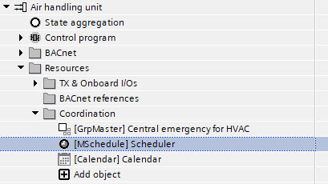
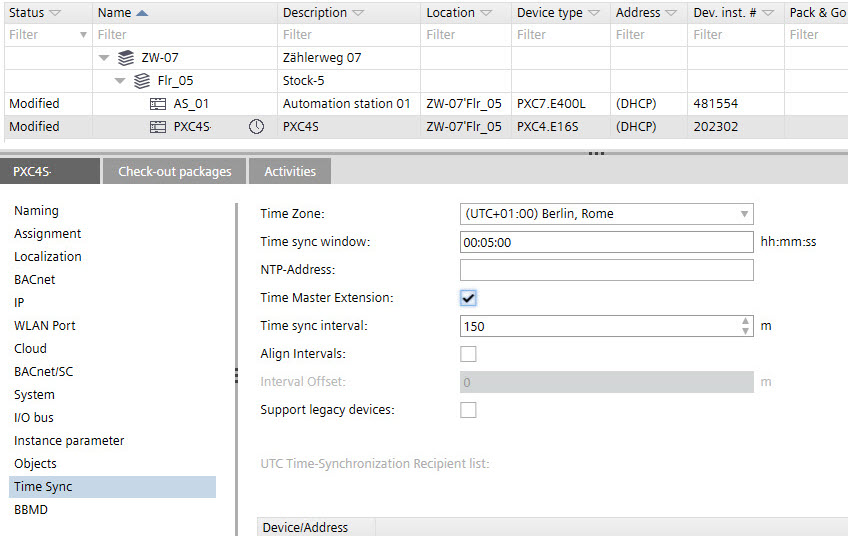

[__VAR_000__] 最佳启动停止控制
这Coordination文件夹显示所有组管理器对象、调度程序对象和日历对象。
Assigning group members to group managers
Add a grouping object
- In the Project tree, select [Plant name] > Resources > Coordination.
Coordination folder - Double-click Add object.
- The Add Coordination object dialog box opens.

- In the Object type field, select Group manager.
- Complete the required fields.
- Click OK.
- A new grouping object is created in the Project tree.

- Right-click the new created object and select Properties.
- Select the BACnet view option.
- Modify the group manager properties as required.

- Click Close.

描述和名称是链接的，即描述与名称匹配，反之亦然。要取消描述与名称的链接，请单击描述右侧的链图标Description和Name字段。要重新链接描述和名称，请再次单击链图标。
Add a calendar object
- In the Project tree, select [Plant name] > Resources > Coordination.
Coordination folder - Double-click Add object.
- The Add Coordination object dialog box opens.

- In the Object type field, select Calendar.
- Complete the required fields.
- Click OK.
- A new calendar object is created in the Project tree.

- Right-click the newly created object and select Properties.
- Select the BACnet view option.
- Modify the calendar properties as required.

- Click Close.
- Right-click the calendar and select Properties.
- The Calendar opens.

- Configure the calendar.
Exception schedules
描述和名称是链接的，即描述与名称匹配，反之亦然。要取消描述与名称的链接，请单击描述右侧的链图标Description和Name字段。要重新链接描述和名称，请再次单击链图标。
Add a scheduler to the Programming editor
- Drag a scheduler (R_ASCHED, R_BSCHED, R_MSCHED) from the Function blocks folder in the Library to the Programming editor.
- The scheduler appears in the Coordination folder.

- Do one of the following:
- In the Project tree, select the Scheduler.
- In the control program, select the scheduler function block.
- Right-click the object and select Configure.
- Configure the schedule program as required.
Configuring a schedule - Define one time manager for the entire project.
a. Go to Building > Building structure.
b. Select a device.
c. In the [device name] tab, select Time sync.
d. Select the Time manager extension checkbox.
- The time manger is marked with a
 icon.
icon.
Device details
Programming editor
Plants navigation view